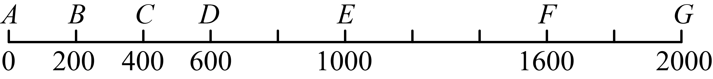

专题2.5 有理数的乘除运算（举一反三讲义）
【北师大版2024】

【题型1 两个有理数的乘法运算】 3
【题型2 多个有理数的乘法运算】 4
【题型3 有理数的乘法的实际应用】 6
【题型4 倒数】 8
【题型5 有理数乘法运算律】 10
【题型6 有理数的除法运算】 12
【题型7 有理数除法的应用】 14
【题型8 有理数乘除混合运算】 17
【题型9 有理数乘除中的简便运算】 19
【题型10 有理数混合运算的应用】 25
 知识点1 有理数乘法法则
知识点1 有理数乘法法则
1. 正数乘正数，积为正数；正数乘负数，积为负数；负数乘正数，积为负数；负数乘负数，积为正数．积的绝对值等于各乘数的绝对值的积．
2. 两数相乘，同号得正，异号得负，且积的绝对值等于乘数的绝对值的积；任何数与0相乘，都得0．
3. 有理数乘法法则也可以表示如下：
设a，b为正有理数，c为任意有理数，则
(+a)×(+b)=a×b，(−a)×(−b)=a×b；
(−a)×(+b)=−(a×b)，(+a)×(−b)=−(a×b)；
c×0=0，0×c=0．
知识点2 倒数的概念与求法
1. 倒数的概念：乘积是1的两个数互为倒数．即若a与b互为倒数，则a×b=1．
2. 倒数的求法
类型 | 方法 |
真、假分数的倒数 | 将分子分母交换位置 |
非0整数的倒数 | 整数作分母，1作分子 |
小数的倒数 | 对于可以除尽的数的倒数，可以用1除以这个数求倒数 |
对于除不尽的数，转换为分数，再按照真、假分数求倒数的方法来进行 | |
带分数的倒数 | 先把带分数化为假分数，然后将分子分母调换位置 |
知识点3 有理数的乘法运算律
运算律 | 文字叙述 | 用字母表示 |
乘法交换律 | 两个数相乘，交换乘数的位置,积不变 | ab=ba |
乘法结合律 | 三个数相乘，先把前两个数相乘，或者先把后两个数相乘，积不变 | (ab)c=a(bc) |
乘法分配率 | 一个数与两个数的和相乘，等于把这个数分别与这两个数相乘，再把积相加 | a(b+c)=ab+ac |
知识点4 多个有理数相乘的符号法则
1. 几个不为0的数相乘，负的乘数的个数是偶数时，积为正数，奇数时，积为负数．
2. 几个数相乘，如果其中有乘数为0，那么积为0．
知识点5 多个有理数相乘的符号法则
1. 有理数除法法则
（1）除以一个不等于0的数，等于乘这个数的倒数．即a÷b=a⋅1b(b≠0)．
（2）两数相除，同号得正，异号得负，且商的绝对值等于被除数的绝对值除以除数的绝对值的商．若 ab>0，则ab>0；若ab<0,则ab<0．
（3）0除以任何一个不等于0的数，都得0．
2. 有理数除法的两个法则要根据具体情况灵活选用
（1）对于除法的两个法则，在计算时可根据具体情况选用，一般在不能整除的情况下选用法则（1）比较简便，在能整除的情况下，选用法则（2）比较简便．
（2）如果被除数和除数都是整数，且不能整除，或者如果被除数和除数中有小数或分数，一般选用法则（1)进行计算．
知识点6 多个有理数相乘的符号法则
有理数的乘除混合运算通常是先将除法转化为乘法，然后按照乘法法则，确定积的符号，最后求出结果．
知识点7 多个有理数相乘的符号法则
有理数的四则运算：先算乘除，后算加减，有括号先算括号里面的（先小括号，再中括号，最后大括号），同级运算，按照从左往右的顺序进行计算．
【题型1 两个有理数的乘法运算】
【例1】（2025·浙江杭州·三模）下列结果中，是负数的是（ ）
A．−−3 B．−−2 C．3×4 D．0×−2
【答案】B
【分析】本题考查了负数的概念，绝对值、相反数及有理数的乘法，掌握这些知识是关键；分别计算各选项的值，判断是否为负数即可．
【详解】解：A. −−3：负负得正，结果为3，是正数；
B. −−2：先计算绝对值，再取负号，结果为−2，是负数；
C. 3×4：直接相乘，结果为12，是正数；
D. 0×−2：任何数与0相乘均为0，既不是正数也不是负数；
综上，只有选项B的结果为负数；
故选：B．
【变式1-1】（2025·山西运城·模拟预测）计算3×−5的结果是（ ）
A．−2 B．2 C．−15 D．15
【答案】C
【分析】本题考查了有理数的乘法运算，熟练掌握有理数的乘法运算是解题的关键；因此此题可根据有理数的乘法运算进行求解即可
【详解】解：3×−5=−15；
故选：C ．
【变式1-2】（2025·吉林松原·模拟预测）若−3×□的运算结果为正数，则□内的数字可以为（ ）
A．−1 B．0 C．1 D．2
【答案】A
【分析】本题主要考查了有理数的乘法计算．根据有理数的乘法计算法则，即可得到答案．
【详解】解：∵−3×□的运算结果为正数，
∴□内的数字为负数，故A选项符合题意；
故选：A
【变式1-3】（24-25七年级上·四川宜宾·期末）在4，−5，6，−7这四个数中，任意取两个数相乘，所得的积最大是 ．
【答案】35
【分析】本题考查有理数的乘法，有理数大小比较．关键要明确不为零的有理数相乘的法则：两数相乘，同号得正，异号得负，并把绝对值相乘．
两个非0数相乘，同号得正，异号得负，且正数大于一切负数，所以找积最大的应从同号的两个数中寻找即可．
【详解】解：要使所得的积最大，两数字必定同号，
4×6=24,−5×−7=35，
∵24<35，
∴任意取两个数相乘，所得的积最大是35，
故答案为：35．
【题型2 多个有理数的乘法运算】
【例2】（2024七年级上·全国·专题练习）下面计算正确的是（ ）
A．12×−13×−14=−2184
B．−15×−4×15×−12=−12
C．−9×5×−8×0=9×5×8=360
D．−5×−4×−2×−2=5×4×2×2=80
【答案】D
【分析】本题考查有理数的乘法，多个有理数相乘，熟练掌握多个有理数相乘计算法则是解题的关键；
根据多个有理数相乘计算法则即可求解；
【详解】解：A、12×−13×−14=2184，故该选项错误；
B、−15×−4×15×−12
=−15×4×15×12
=−60×15×12
=−6
故该选项错误；
C、−9×5×−8×0=0，故该选项错误；
D、−5×−4×−2×−2=5×4×2×2=80，故该选项正确；
故选：D
【变式2-1】（24-25七年级下·全国·假期作业）计算．
(1)−2413×−167×0×43；
(2)−4×−1234×−25；
(3)4978×−16；
【答案】(1)0
(2)−123400
(3)−798
【分析】本题考查有理数的乘除混合运算．掌握各运算法则是解题关键．
（1）任何数与0相乘都等于0，所以结果为0．
（2）利用乘法交换律先算−4与−25的积，再乘−1234．
（3）将4978化为50−18后与−16相乘并约分计算．
【详解】（1）解：原式=0；
（2）解：原式=−4×−25×−1234
=100×−1234
=−123400；
（3）解：原式=50−18×−16
=−50×16−18×−16
=−800+2
=−798．
【变式2-2】（24-25八年级上·云南昭通·期末）已知A41=4，A42=4×3=12，A43=4×3×2=24，A44=4×3×2×1=24，观察并找规律，计算A73的结果是（ ）
A．42 B．120 C．210 D．840
【答案】C
【分析】此题考查了有理数的乘法运算，根据已知等式找出规律，利用规律列出乘法算式，即可求解．
【详解】解：由已知得A73=7×6×5=210，
故选C．
【变式2-3】（24-25七年级上·河南南阳·期中）已知x，y表示两个数，规定新运算“※”及“△”如下： x※y=2x+3y,x△y=3xy，则(−3※4)△−13的值为 ．
【答案】−6
【分析】本题考查有理数的运算，根据新定义的法则，列出算式进行计算即可．
【详解】解：原式=2×−3+3×4△−13
=−6+12△−13
=6△−13
=3×6×−13
=−6；
故答案为：−6．
【题型3 有理数的乘法的实际应用】
【例3】（2025·江苏南京·模拟预测）在我国古代数学著作《孙子算经》中，有这样一道题：今有物不知其数，三三数之剩二，五五数之剩三，七七数之剩二．问物几何？其最小正整数解记为a．又知b=23，则a b（填“>”“<”或“=”）．
【答案】=
【分析】本题考查了有理数的乘法运算，理解题意，分别由小到大进行分析，发现符合题意的最小正整数解为23，即a=23，再结合b=23，即可作答．
【详解】解：∵三三数之剩二，
∴3×0+2=2,3×1+2=5,3×2+2=8,3×3+2=11,3×4+2=14，
3×5+2=17,3×6+2=20,3×7+2=23，
∵五五数之剩三，
∴5×0+3=3,5×1+3=8,5×2+3=13,5×3+3=18,5×4+3=23,
∵七七数之剩二．
∴7×0+2=2,7×1+2=9,7×2+2=16,7×3+2=23,
∵最小正整数解记为a．
∴a=23，
∵b=23，
∴a=b，
故答案为：=．
【变式3-1】（24-25六年级下·江苏南京·期末）实验小学要给报告厅的小舞台铺上地垫，舞台的面积是40.8平方米，地垫的单价为19.9元/平方米，一共要准备多少元？下面符合实际需要的估算方法是（ ）
A． B．
C． D．
【答案】D
【分析】本题考查小数乘法估算的实际应用及方法，利用面积乘每平方米的单价，计算时把小数看作与它相近的整数计算即可，注意估算的时候估大一些．
【详解】解：40.8×19.9≈41×20=820(元) ，
因此准备820元就够了，
符合实际需要的估算方法是选项D．
故选：D．
【变式3-2】（2025八年级下·全国·专题练习）宾馆有100间相同的客房，经过一段时间的经营，发现客房定价与客房的入住率之间有下表所示的关系，按照这个关系，要使客房的收入最高，每间客房的定价应为（ ）
每间房价（元） | 300 | 280 | 260 | 220 |
入住率 | 65% | 75% | 85% | 95% |
A．300元 B．280元 C．260元 D．220元
【答案】C
【分析】本题考查了有理数乘法的应用，正确理解收入等于房价乘以数量乘以入住率是解题的关键．
分别计算不同房价对应的收入，比较即可．
【详解】解：当每间客房的定价为300元时，客房的收入为100×65%×300=19500（元）；
当每间客房的定价为280元时，客房的收入为100×75%×280=21000（元）；
当每间客房的定价为260元时，客房的收入为100×85%×260=22100（元）；
当每间客房的定价为220元时，客房的收入为100×95%×220=20900（元）.
所以当每间客房的定价为260元时，客房的收入最高．
故选：C．
【变式3-3】（24-25七年级下·黑龙江绥化·开学考试）某商场优惠活动宣传：两个品牌分别标有“满100减50元”和“打6折”． 请你比较以上两种优惠方案的异同（可举例说明） ．
【答案】标价整百时，满100减50元”更优惠；标价非整百时，“打6折”更优惠．
【分析】本题考查了商品销售问题中的方案选择问题，解题关键是要读懂题目的意思，根据题目给出的条件，分情况进行计算，然后再确定优惠方案，即可作答．
【详解】解：如果买的商品标价是整百元的，
如标价为500元，
则“满100减50元”，500−5×50=250（元）；
“打6折”， 500×0.6=300（元）；
∵300>250
∴此时满100减50元”更优惠；
如果买的商品标价不是整百元时，如标价为280元，则有
“满100减50元”： 280−50×2=280−100=180（元）
“打6折”： 280×60%=168（元），
∵180>168，
∴“打6折”比较实惠，
故答案为标价整百时，满100减50元”更优惠；标价非整百时，“打6折”更优惠．
【题型4 倒数】
【例4】（24-25九年级下·甘肃张掖·期中）2025的相反数的倒数是（ ）
A．2025 B．−12025 C．-2025 D．12025
【答案】B
【分析】本题考查相反数和倒数的概念，掌握相反数的和倒数的定义成为解题的关键．
先确定2025的相反数，再求其倒数即可．
【详解】解：2025的相反数是−2025．
−2025的倒数为1−2025=−12025．
∴2025的相反数的倒数是−12025，对应选项B．
故选B．
【变式4-1】（2024·山东菏泽·二模）−−34的倒数是（ ）
A．34 B．−34 C．43 D．−43
【答案】D
【分析】本题考查了绝对值、倒数的定义，熟练掌握以上知识点是解答本题的关键．根据绝对值、倒数的定义解答即可．
【详解】解：∵−−34=−34，
∴ −−34的倒数是−43，
故选：D．
【变式4-2】（24-25七年级上·陕西渭南·期中）请根据对话，解答下列问题．
我不小心把老师留的作业题弄丢了，只记得式子是3−a+b−c． |
我告诉你：“a的相反数是2，b<4，且b的绝对值是5，c的倒数是12．” |
求式子3−a+b−c的值．
【答案】−2
【分析】本题考查了代数式求值，熟练掌握运算法则是解题的关键．直接利用相反数、绝对值的定义分别得出a，b，c的值，代入原式计算即可．
【详解】解：∵a的相反数是2，
∴a=−2；
∵b<4，且b的绝对值是5，
∴b=−5；
∵c的倒数是12，
∴c=2．
∴原式=3−(−2)+(−5)−2
=3+2+(−5)+(−2)
=−2
【变式4-3】（24-25七年级上·甘肃兰州·期中）若a、b互为相反数，c、d互为倒数，m的绝对值为2．
(1)直接写出a+b,cd,m的值；
(2)求m+cd+a+bm的值．
【答案】(1)a+b=0，cd=1，m=±2；
(2)3或−1
【分析】此题考查了有理数的混合运算，相反数、倒数，以及绝对值，熟练掌握各自的性质是解本题的关键．
（1）利用相反数，倒数，以及绝对值的代数意义求出各自的值即可；
（2）把各自的值代入原式计算即可求出值．
【详解】（1）解：∵a、b互为相反数，c、d互为倒数，m的绝对值为2，
∴a+b=0，cd=1，m=±2；
（2）当m=2时，原式=2+1+02=2+1+0=3；
当m=−2时，原式=−2+1+02=−2+1+0=−1，
则原式的值为3或−1．
【题型5 有理数乘法运算律】
【例5】（24-25七年级下·全国·假期作业）张丽用计算器计算“45.7×9.9”时，发现键“9”坏了，下面输入不能得到正确结果的是（ ）．
A．45.7×3.3×3 B．45.7×10−0.1 C．45.7×8.8+45.7×1.1
【答案】B
【分析】本题考查了乘法运算的灵活应用，以及通过分解、转化等方法解决实际问题的能力，解题的关键是在避免直接使用数字“9”的情况下，等价表示9.9．据题意，由于计算器的“9”键损坏，需将9.9转换为不含数字9的表达式进行计算，同时验证各选项是否与原式等价．
【详解】解：选项A、45.7×3.3×3=45.7×3.3×3=45.7×9.9，计算正确，故此选项不符合题意；
选项B、正确拆分应为45.7×10−45.7×0.1=45.7×10−0.1=45.7×9.9，但选项B直接减去0.1，无法得到正确答案，故此选项符合题意；
选项C、根据乘法结合律，45.7×8.8+45.7×1.1=45.7×8.8+1.1=45.7×9.9，计算正确，故此选项不符合题意；
故选：B．
【变式5-1】（24-25八年级下·辽宁丹东·期中）计算：4.3×202.5+7.6×202.5−1.9×202.5= ．
【答案】2025
【分析】本题主要考查有理数的混合运算，简便计算的方法，逆用乘法的分配律将原式变为4.3+7.6−1.9×202.5，再进行计算即可．
【详解】解：4.3×202.5+7.6×202.5−1.9×202.5
=4.3+7.6−1.9×202.5
=10×202.5
=2025．
故答案为：2025．
【变式5-2】（24-25六年级下·上海·假期作业）计算：9535×8.4−95.6×325．
【答案】478
【分析】本题了考查逆用乘法分配律的运用．先把分数化为小数，再运用乘法分配律进行计算，即可作答．
【详解】解：9535×8.4−95.6×325
=95.6×8.4−95.6×3.4
=95.6×(8.4−3.4)
=95.6×5
=478．
【变式5-3】（24-25七年级下·全国·假期作业）脱式计算，能简算的要简算．
①0.25×5.32×4
②957+9957+99957+17×6
③45×37×512
【答案】5.32；1110；17
【分析】本题考查乘法交换律和结合律、拆分计算法、通过约分简化分数乘法，熟练掌握以上知识点是解题的关键．①根据乘法交换律a×b=b×a把0.25×5.32×4变成0.25×4×5.32，再按顺序计算；②把17×6改写成27+27+27，然后根据加法交换律a+b=b+a，加法结合律a+b+c=a+b+c，把957+9957+99957+27+27+27变成957+27+9957+27+99957+27，再按顺序计算；③根据乘法交换律a×b=b×a把45×37×512变成45×512×37，再按顺序计算．
【详解】解：①0.25×5.32×4
=0.25×4×5.32
=1×5.32
=5.32
②957+9957+99957+17×6
=957+9957+99957+27×3
=957+9957+99957+27+27+27
=957+27+9957+27+99957+27
=10+100+1000
=1110
③45×37×512
=45×512×37
=13×37
=17．
【题型6 有理数的除法运算】
【例6】（24-25七年级下·全国·假期作业）如果“A÷B=C”，那么“B÷A=( )”．计算2016÷201620162017的结果是( )．
【答案】 1C 20172018
【分析】本题主要考查了有理数的除法计算，倒数的定义，熟知相关计算法则是解题的关键．
（1）因为A÷B=AB，B÷A=BA，AB与BA互为倒数，所以A÷B的商和B÷A的商互为倒数，而C的倒数是1C，由此可得答案．
（2）先将除数201620162017化成假分数，分子用相乘的形式表示，即2016×2017+2016，再把除法变成乘法求解即可．
【详解】解：（1）如果“A÷B=C”，那么“B÷A=1C”；
（2）2016÷201620162017
=2016÷2016×2017+20162017
=2016×20172016×2017+2016
=2016×20172016×2017+1
=20172018，
故答案为：1C，20172018．
【变式6-1】（24-25七年级上·湖南娄底·期末）计算：4÷−8÷−2= ．
【答案】14/0.25
【分析】本题考查有理数的除法，熟练掌握有理数的除法法则是解题的关键；
根据有理数的除法法则计算即可求解；
【详解】解：4÷−8÷−2=12×12=14；
故答案为：14
【变式6-2】（24-25七年级上·广东广州·期中）如果a+b<0，ab>0，那么下列成立的是（ ）
A．a>0，b>0 B．a>0，b<0 C．a<0，b<0 D．a<0，b>0
【答案】C
【分析】本题主要考查了有理数的加法、除法运算法则，熟知两种运算的法则是正确解答此题的关键．
根据有理数加法法则：①同号相加，取相同符号，并把绝对值相加．②绝对值不等的异号加减，取绝对值较大的加数符号，并用较大的绝对值减去较小的绝对值．两数相除，同号得正，异号得负，并把绝对值相除，依此即可作出判断．
【详解】解：∵ab>0，
∴ a，b同为正或同为负，
∵ a+b<0，
∴ a，b同为负，即：a<0，b<0；
故选：C．
【变式6-3】（24-25七年级上·福建福州·期末）将十进制数36化为七进制数为 ．
【答案】517
【分析】本题考查了进位制之间的转化，解题的关键是掌握“除k取余法”．
把所给的十进制数除以7，得到商和余数，继续除以7，直到商为0，把余数倒序写下来即可得到答案．
【详解】解：∵36÷7=5⋯1，5÷7=0⋯5，
∴36=517，
故答案为：517．
【题型7 有理数除法的应用】
【例7】（24-25七年级上·江苏连云港·阶段练习）教师发现学生平时喜欢玩洞洞乐，于是设计了一个洞洞乐游戏，游戏道具：每张A4纸上画满24个相同的圆圈，游戏规则：两人一组轮流用铅笔将圆圈戳洞，每个圆圈只戳一个洞，每人一次可戳一个或两个圆圈（不能多戳或不戳），谁将最后一个圆圈戳洞，谁就获胜．
(1)先开始的人胜，还是后开始的人胜？你有必胜的方法吗？请你写出你的方法．
(2)如果游戏规则改为一次只能戳一个或两个或三个或四个圆圈（最多四个），怎样才能必胜？请写出你的方法．
【答案】(1)后开始获胜，方法见解析
(2)先开始的人有必胜策略，方法见解析
【分析】本题考查了博弈策略，整数的除法运算及余数概念，熟练掌握整数的除法运算及余数概念是解题的关键；
（1）根据每轮两人戳洞的总数情况，得出选择控制每轮两人一共戳3个洞（一人戳1个时另一人戳2个，或者一人戳2个时另一人戳1个）．根据不管先开始的人第一次戳1个还是2个圆圈，后开始的人都可以通过相应地戳2个或者1个圆圈，使得两人第一轮一共3戳个圆圈．然后在后续的每一轮中，后开始的人继续根据先开始的人戳洞的数量，保证每轮两人一共戳3个圆圈，这样经过8轮后，后开始的人就一定能戳到最后一个圆圈获胜．
（2）根据两人一轮戳洞的数量之和可能是2到8个圆圈，同样要从24个圆圈总数出发，找到合适的每轮戳洞总数，让其能整除（或结合余数来控制局面），以确定必胜策略．分别计算除以每轮可能总数的情况发现，如果能保证每轮两人一共戳5个圆圈，经过4轮，在处理好开始的余数4个圆圈后，就能戳完所有圆圈．
【详解】（1）解：后开始的必胜，
∵每人一次可戳一个或两个圆圈，
∴两人一轮戳洞的数量之和存在三种可能情况：
若两人都戳一个圆圈，一轮共戳2个圆圈；
若一人戳一个，另一人戳两个，一轮共戳3个圆圈；
若两人都戳两个圆圈，一轮共戳4个圆圈．
通过计算分别除以每轮可能的总数情况：
24÷2=12（轮）；
24÷3=8（轮）；
24÷4=6（轮）．
发现24能被3整除，这意味着如果能保证每轮两人一共3戳个圆圈，经过8轮就能戳完所有圆圈，并且可以通过先后手的策略来控制局面．
具体操作如下：
先开始的人先戳洞，不管先开始的人第一次戳1个还是1个圆圈，后开始的人都可以相应地戳2个或者1个圆圈，使得两人第一轮一共戳3个圆圈．然后在后续的每一轮中，后开始的人继续根据先开始的人戳洞的数量，保证每轮两人一共3戳个圆圈．这样经过8轮后，后开始的人就一定能戳到最后一个圆圈，从而获胜．
（2）先开始的人有必胜策略．
∵游戏规则改为一次只能戳一个或两个或三个或四个圆圈（最多四个），
∴两人一轮戳洞的数量之和可能是2到8个圆圈，
∴24÷2=12；
24÷3=8；
24÷4=6；
24÷5=4⋯⋯4；
24÷6=4；
24÷7=3⋯⋯3；
24÷8=3．
发现24÷5=4⋯⋯4，即如果能保证每轮两人一共戳5个圆圈，经过4轮，在处理好开始的余数4个圆圈后，就能戳完所有圆圈．
具体操作如下：
先开始的人先戳4个圆圈，此时剩下个圆圈．然后不管后开始的人戳1个、2个、3个还是4个圆圈，先开始的人在后续的每一轮中，都根据后开始的人戳洞的数量，保证每轮两人一共戳5个圆圈．这样经过4轮后，先开始的人就可以戳到最后一个圆圈，进而获胜．
【变式7-1】（24-25七年级上·湖南株洲·开学考试）据有关资料统计，株洲市2023年地方财政收入约124.8亿元，在湖南省的财政收入增速排名中排第六位，株洲市2023年地方财政收入相比2022年地方财政收入约增长了4%，请你计算一下株洲市2022年地方财政收入约为多少亿元？
【答案】120亿元
【分析】本题考查了有理数除法的应用，根据题意列出算式计算即可求解，理解题意是解题的关键．
【详解】解：124.8÷1+4%=120（亿元），
答：株洲市2022年地方财政收入约为120亿元．
【变式7-2】（24-25七年级上·山西长治·开学考试）中国铁路的发展见证了新中国的沧桑巨变，高铁已成为中国的一张名片．由我国自主研发的“复兴号”高铁的速度比“和谐号”动车组的速度快40%，“和谐号”动车组每小时比“复兴号”高铁少行100千米．“复兴号”与“和谐号”高铁每小时各行驶多少千米？
【答案】“和谐号”动车每小时行驶250千米，“复兴号”动车每小时行驶350千米．
【分析】本题考查有理数的混合运算．“和谐号”动车每小时行驶250千米，“复兴号”动车每小时行驶350千米．先根据和谐号”动车组每小时比“复兴号”高铁少行100千米求出“和谐号”的速度，再求“复兴号”的速度．
【详解】解：“和谐号”的速度为：100÷40%=250（千米/小时）
“复兴号”的速度为：250+100=350（千米/小时）．
答：“和谐号”动车每小时行驶250千米，“复兴号”动车每小时行驶350千米．
【变式7-3】（24-25七年级上·四川眉山·期中）中国高铁设计标准高，行驶稳定，是中国发展的一张独特而亮丽的“名片”．至2022年底，中国高铁运营里程超过4.3万千米，位居世界第一，高铁的票价是按“票价=每千米乘车价钱×乘车路程”的方法计算的，已知A站至G站的里程为2000千米，全程票价为800元，沿途各站的路程如图．李老师从C站上车，购买了一张80元的票，他可能会在哪一站下车？请列式说明．

【答案】到D站或到B站，说明见解析
【分析】本题考查有理数运算的实际应用，先求出每千米的票价，进而求出李老师买票的费用除以单价，求出里程，进行判断即可．
【详解】
800÷2000=0.4（元/千米）
80÷0.4=200（千米）
400+200=600（千米）或400−200=200（千米）
到D站或到B站都可．
【题型8 有理数乘除混合运算】
【例8】（24-25七年级上·山东威海·期末）如图，按程序框图中的顺序计算，当输入的初始值x为32时，则输出的最后结果为 ．
【答案】128
【分析】本题考查程序流程图与有理数的运算，把32代入流程图，列出算式进行计算，直至最后结果>100，即可．
【详解】解：32×12÷−14=−64<100，
−64×12÷−14=128>100，输出；
故答案为：128．
【变式8-1】（24-25七年级上·浙江杭州·期中）高斯被认为是历史上最杰出的数学家之一，享有“数学王子”之称．现有一种高斯定义的计算式，已知a是有理数，[a]表示不超过a的最大整数，如[3.2]=3，[−1.5]=−2，[0.8]=0，[2]=2等，那么3.14÷2×−337的值是（ ）
A．−92 B．−6 C．−8 D．−9
【答案】B
【分析】本题主要考查有理数的乘除混合运算，根据新定义求出各个数，再进行乘除运算即可求解．
【详解】解：3.14÷2×−337
=3÷2×(−4)
=1.5×(−4)
=−6，
故选：B．
【变式8-2】（24-25七年级上·山东济宁·期中）小丽同学做一道计算题的解题过程如下：12×23−34+6÷12−13
解：原式=12×23−12×34+6÷12−13 …………第一步
=8−9+6÷12−6÷13 …………第二步
=−1+12−18 …………第三步
=−7 …………第四步
根据小丽的计算过程，回答下列问题：
(1)小丽在进行第一步时，运用了乘法的______律；
(2)她在计算中出现了错误，其中你认为在第______步开始出错了；
(3)请你给出正确的解答过程．
【答案】(1)分配；
(2)二；
(3)见解析．
【分析】本题考查了有理数的混合运算，有理数混合运算顺序：“先算乘方，再算乘除，最后算加减；同级运算，应按从左到右的顺序进行计算；如果有括号，要先做括号内的运算．进行有理数的混合运算时，注意各个运算律的运用，使运算过程得到简化”．
（1）根据乘法分配律可得答案；
（2）除法没有分配律，据此可得答案；
（3）先利用乘法分配律展开，然后计算括号内的减法，再计算乘除，最后计算加减即可．
【详解】（1）解：小丽在进行计算第一步时运用了乘法分配律，
故答案为：分配；
（2）解：她在第二步出错了，因为除法没有分配律，
故答案为：二；
（3）解：12×23−34+6÷12−13
=12×23−12×34+6÷12−13
=8−9+6÷16
=8−9+36
=35．
【变式8-3】（24-25七年级上·四川成都·期中）在一个遥远的魔法世界里，有一个神秘的圆环，它被称为“五二○圆环”．圆环被九条线段均匀分成了的九个部分，每个部分里会隐藏着一个数字，如果你找出了全部的数字，那么你将被授予“五二○大王”的称号．如图所示，这九个数字中相邻的连续三个数之积均为520，则x的值为 ．
【答案】1
【分析】本题考查了有理数乘除混合运算的应用，熟练掌握有理数的乘除法运算是解本题的关键．先求出20与26之间的数，再求出26与x之间的数，进而可求x的值．
【详解】解：∵相邻的连续三个数之积均为520，
∴20与26之间的数为：520÷20×26=1，
∴26与x之间的数为：520÷1×26=20，
∴x=520÷26×20=1，
∴x的值为 1．
故答案为：1．
【题型9 有理数乘除中的简便运算】
【例9】（24-25七年级上·山西临汾·期中）阅读下列材料，完成后面任务．
计算：−130÷23−110+16−25 解法①：原式=−130÷23−−130÷110+−130÷16−−130÷25 =−120+13−15+112=16 解法②：原式=−130÷23+16−110+25 =−130÷56−12=−130×3=−110 解法③：原式的倒数为23−110+16−25÷−130 =23−110+16−25×(−30)=−20+3−5+12=−10 故原式=−110 |
任务：
(1)上述三种解法得出的结果不同，肯定有解法是错误的，你认为解法 是错误的．（填序号）
(2)在正确的解法中，你认为解法 比较简便．（填序号）
(3)请你进行简便计算：−124÷12−23+56−94．
【答案】(1)①
(2)③
(3)138
【分析】本题考查有理数的计算，熟练掌握有理数的混合运算是解题的关键．
（1）根据有理数的混合运算法则即可判断解法的正确性；
（2）运用有理数的除法运算法则：除以一个数等于乘以这个数的倒数，运算是最简便的，只有解法三符合这种运算法则，
（3）参照解法③进行简便计算．
【详解】（1）解：解法①是错误的．
故答案为：①；
（2）解：在正确的解法中，解法③运用了有理数的除法的运算法则，乘法的分配律，比较简便．
故答案为：③；
（3）解：原式的倒数为：
12−23+56−94÷−124
=12−23+56−94×−24
=12×−24−23×−24+56×−24−94×−24
=−12+16−20+54
=38，
故原式=138．
【变式9-1】（24-25六年级上·黑龙江绥化·期中）计算下面各题，能用简便算法的就用简便算法．
(1)2027×95÷13
(2)1213÷65÷1213
(3)1112−38×24
(4)3−1725÷345−910
【答案】(1)4
(2)56
(3)13
(4)2
【分析】本题考查有理数的混合运算．
（1）按照从左到右的运算顺序进行计算即可；
（2）化除法为乘法，然后运用乘法交换律进行计算即可；
（3）运用乘法分配律进行计算即可；
（4）先算除法，再运用减法的性质进行计算即可．
【详解】（1）解：2027×95÷13
=2027×95×3
=43×3
=4；
（2）解：1213÷65÷1213
=1213×56×1312
=1213×1312×56
=1×56
=56；
（3）解：1112−38×24
=1112×24−38×24
=22−9
=13；
（4）解：3−1725÷345−910
=3−1725×534−910
=3−110−910
=3−110+910
=3−1
=2．
【变式9-2】（23-24七年级上·山东菏泽·开学考试）简便计算
(1)11×2+12×3+13×4+…+19×10
(2)4.44÷458+6637÷25111−41125
(3)712−0.75+920÷3.6+17×2611
(4)2015×20132014
(5)19+110+111+112×110+111+112+113−19+110+111+112+113×110+111+112
【答案】(1)910
(2)4.44
(3)1
(4)201320132014
(5)1117
【分析】（1）根据1nn+1=1n−1n+1，根据分数的拆项公式进行简算即可；
（2）先将除法转化为乘法，再逆用乘法分配律进行计算即可；
（3）先计算括号里面的，再计算最后计算乘法即可；
（4）把原式转化为2014+1×20132014，再利用乘法分配律进行计算即可；
（5）根据先将19+110+111+112看着一个整体，利用乘法分配律把后面乘法部分展开，再逆用乘法分配律进行计算即可．
【详解】（1）解：11×2+12×3+13×4+⋯+19×10
=1−12+12−13+13−14+⋯⋯+19−110
=1−110
=910
（2）4.44÷458+6637÷25111−41125
=4.44×837+6637×4.44−4.44
=4.44×837+6637−1
=4.44×1
=4.44
（3）712−0.75+920÷3.6+17×2611
=(712−1.2÷3.6+17)×2611
=(712−13+17)×2611
=(14+17)×2811
=1128×2811
=1
（4）2015×20132014
=2014+1×20132014
=2014×20132014+1×20132014
=201320132014
（5）19+110+111+112×110+111+112+113−19+110+111+112+113×110+111+112
=19+110+111+112×110+111+112+113− 19+110+111+112×110+111+112+113×110+111+112
=19+110+111+112×110+111+112+113− 19+110+111+112×110+111+112−113×110+111+112
=19+110+111+112×110+111+112+113−110−111−112−113×110+111+112
=19+110+111+112×113−113×110+111+112
=19×113
=1117
【点睛】本题主要考查了有理数的混合运算，解题的关键是熟练掌握有理数的混合运算顺序和运算法则．灵活运用乘法分配律进行计算．
【变式9-3】（24-25七年级下·重庆·自主招生）计算：3.85÷518+12.3×145÷314×39．
【答案】432
【分析】本题考查了有理数乘除的简便运算，熟练掌握有理数乘除的运算法则是解题的关键．根据有理数乘除的运算法则即可求解．
【详解】解：3.85÷518+12.3×145÷314×39
=3.85×185+12.3×95÷134×39
=3.85×2×95+12.3×95×413×39
=7.7×95+12.3×95×413×39
=7.7+12.3×95×413×39
=20×95×413×39
=432．
【题型10 有理数混合运算的应用】
【例10】（24-25七年级上·广东广州·期中）张家口市怀来县种植葡萄已有800多年的历史，其中最知名的品种之一是龙眼葡萄，它被郭沫若誉为“北国明珠”．该县质监局对某企业出售的葡萄进行了抽检，从库中任意抽出20箱样品进行检测，每箱的质量超过标准质量（标准质量为10千克）的部分记为正数，不足的部分记为负数，记录如下表：
与标准质量的差（单位：千克） | −0.1 | 0 | −0.2 | +0.3 | +0.1 | +0.4 |
箱数 | 2 | 5 | 1 | 4 | 6 | 2 |
(1)若每箱与标准质量的差的绝对值小于或等于0.2千克的记为合格产品，则这20箱样品的合格率是多少？
(2)这批样品总质量是多少千克？
【答案】(1)70%
(2)总质量为202.2千克
【分析】本题考查有理数运算的实际应用，正确的列出算式，是解题的关键：
（1）根据题意确定求出符合题意的数量除以总数量即可；
（2）标准质量乘以总箱数加上与标准质量的差的总和即可．
【详解】（1）解：由题意得：合格的有2+5+1+6=14（箱），
故合格率为：14÷20×100%=70%；
（2）解：2×−0.1+5×0+1×−0.2+4×0.3+6×0.1+2×0.4
=−0.2+0−0.2+1.2+0.6+0.8
=2.2（千克）
20×10+2.2=202.2（千克）
答：这批样品总质量为202.2千克．
【变式10-1】（24-25七年级上·湖北黄冈·期中）1202年数学家斐波那契在《计算之书》中记载了一列数：1，1，2，3，5，……，这一列数满足：从第三个数开始，每一个数都等于它的前两个数之和．则在这一列数的前2024个数中，奇数的个数有多少个？
【答案】1350
【分析】本题主要考查了数字类规律探索，有理数除法的应用，有理数四则混合运算的实际应用等知识点，从题中所给的一列数中发现并总结出一般规律是解题的关键．
根据所给的一列数，发现从第1个数开始，每相邻的三个数中，前2个数为奇数，后1个数为偶数，据此即可得出答案．
【详解】解：由题意可知，在这列数中，从第1个数开始，每相邻的三个数中，前2个数为奇数，后1个数为偶数，
∵2024÷3=674余2，
2×674+2=1350，
∴在这一列数的前2024个数中，奇数的个数有1350个，
答：在这一列数的前2024个数中，奇数的个数有1350个．
【变式10-2】（2025七年级下·全国·专题练习）甲、乙两辆汽车同时分别从A、B两站相对开出，第一次相遇时离A站有90千米，然后各自按原来速度继续行驶，分别到达对方出发站后立即沿原路返回．第二次相遇时离A站的距离占A、B两站间全长的65%．求A、B两站间的路程．
【答案】A、B两站间的路程是200千米
【分析】本题主要考查了有理数混合运算．根据第一次相遇在距A地90千米的地方，可知甲乙每行驶一个总路程，一辆汽车就行了：90×3=270（千米），第二次在全程65%的地方相遇，说明甲在全程1−65%=35%的地方，据此列式计算求解即可．
【详解】解：90×3=270（千米），
第二次在全程65%的地方相遇，说明甲在全程1−65%=35%的地方，
270米包含甲走了1个全程和1个35%的全程，
则270米对应的全程百分率为1+35%，
即1个全程为270÷1−65%+1=200（千米）．
答：A、B两站间的路程是200千米．
【变式10-3】（2025七年级上·重庆·专题练习）“闯黄灯”已成为引发路口交通事故的主因之一．如图所示的十字路口，该路段交通信号灯红灯亮之前，会有3s亮黄灯的时间．某时刻，小车以18km/h的速度沿着中心线行驶到停止线时交通灯恰好变为黄灯，此时人行道的红绿灯也在3s后变成绿灯，行人以1.2m/s的速度过马路．已知马路宽7.2m，停止线到斑马线的距离s=28m，小车的尺寸为：长度L=4.8m，宽度d=2.2m．求：

(1)行人通过人行横道的时间；
(2)若车闯黄灯，是否会撞到行人；
(3)若人行道处有一长为2m的美团外卖摩托车以2m/s的速度横过马路，则小车速度在什么范围不会撞到摩托车．（不计摩托车宽度，保留两位小数）
【答案】(1)行人通过人行横道的时间为6s
(2)小车不会撞到行人；
(3)小于10m/s或大于46.86m/s
【分析】本题主要考查有理数混合运算的应用，解决本题的关键搞清甲、乙两车相撞的临界情况，抓住时间相等，根据路程关系求出临界速度。
（1）已知路程和时间，利用v=st求出行人通过人行横道的时间；
（2）先计算出小车穿过人行道的时间，再计算出此时行人到中心线时间，再进行比较即可；
（3）根据匀速直线运动的求出两种临界情况下小车的速度，第一种临界为摩托车车头碰到小车车尾；第二种临界为小车车头碰到摩托车车尾，根据路程关系，抓住时间相等，求出小车的临界速度．
【详解】（1）解：行人通过人行横道的时间：t人=s人v人=7.2m1.2m/s=6s；
（2）解：18km/h=5m/s，
28+4.8÷5=6.56s，
6.56−3=3.56s，
3.56×1.2=4.272m>7.22m=3.6m，
所以，小车不会撞到行人；
（3）解：①摩托车车头碰到小车车尾时，7.2−7.22−2.2÷2=0.7s，
28+4.8÷0.7≈46.86m/s
所以小车的速度大于46.86m/s不会撞上摩托车；
②当小车的车头刚好撞上摩托车的车尾，则摩托车行驶的路程为7.22+2=5.6m,
摩托车行驶的时间为：5.6÷2=2.8s，
小车的车头刚好撞上摩托车的车尾的速度为：28÷2.8=10m/s，
所以甲车的速度小于10m/s也不会撞上摩托车；
综上可知，要使小车与摩托不相撞，小车的速度范围是v小车<10m/s或v小车>46.86m/s．